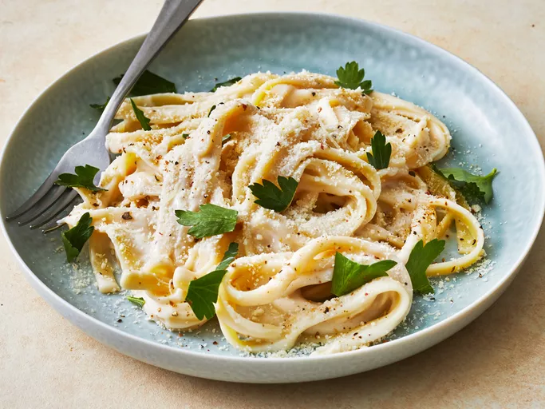

Alfredo Sauce
Home

Description
I experimented with Alfredo sauce until I found a quick, cheap, and easy Alfredo sauce combination — the secret ingredient is cream cheese!
Ingredients
- 1/2 cup butter
- 1 (8 ounce) package cream cheese
- 2 teaspoons garlic powder
- 2 cups milk, more as needed
- 6 ounces grated Parmesan cheese
- 1/8 teaspoon black pepper
Steps
- Melt butter in a medium, nonstick saucepan over medium heat. Add cream cheese and garlic powder, whisking until smooth. Add milk, a little at a time, whisking until smooth. Stir in Parmesan cheese and pepper.
- Remove from the heat when sauce reaches desired consistency; sauce thickens rapidly. Thin with milk if cooked too long.
- Toss with hot pasta to serve.